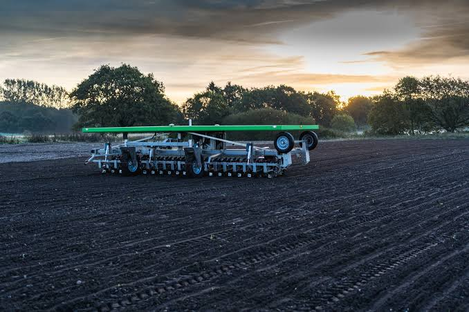

01 / OBSERVER
Surveillance intelligente
Suivez les mesures d’humidité du sol et consultez les informations remontées pour chaque zone.
Voir les mesuresSupervision de l’arrosage automatique
Robotique agricole · Kinshasa
Projet universitaire · supervision agricole

Une supervision claire pour mieux comprendre les besoins de chaque zone et suivre les opérations du robot.
01 / OBSERVER
Suivez les mesures d’humidité du sol et consultez les informations remontées pour chaque zone.
Voir les mesures02 / PRÉCISER
Repérez les zones qui pourraient nécessiter un arrosage grâce aux mesures et seuils configurés.
Voir le suivi d’irrigation03 / SÉCURISER
Consultez les alertes et incidents signalés pendant les déplacements et les missions du robot.
Consulter les alertes04 / SUIVRE
Retrouvez l’état, la progression et les événements associés aux activités observées.
Suivre l’état du robotRoboAgri Kin imagine une agriculture où la technologie aide à prendre des décisions plus précises. La plateforme rassemble les observations, les missions et les alertes dans une interface pensée pour rendre le suivi agricole plus clair.
Les observations disponibles sont consultables dans l’application.
Découvrir l’application